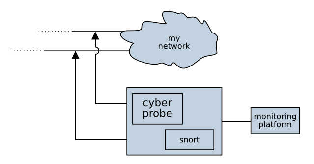

This is a software-based probe, collects packets from a set of network interfaces, and any packets which match on a address map are forwarded to an endpoint in a packet-streaming protocol.
Optionally, the simple probe can be configured to receive alerts from snort. In this configuration, when an alert is received from Snort, the IP source address associated with the alert is dynamically targeted for a period of time.
Cyberprobe started out as a research tool to study networked applications to find out what they were doing, as we all know how software suppliers sometimes like to add some "extras" to their software :). So, a simple tool to configure how packets are captured from a network was produced. But as you are probably aware, the biggest threat to the safety of your information is from outside of your network. Thus, the ability to trigger collection of packets upon detection of a Snort rule hit was added.
Snort is a powerful IDS system which studies packets on your network, analyses them against a set of signatures and creates logs and alerts. We felt there was a need to harness the Snort alerts, but use them to trigger collection and forwarding of packets from the address which caused the alert.
You may be asking why you'd want to use Cyberprobe? After all, monitoring networks with tcpdump and Snort and collecting alerts and packet data for analysis is a straightforward process for many networks. However, real-time analysis is not possible if everything is file based. Collecting the data and forwarding over the network to a central collection point allows for a much more "industrialized" approach to intrusion detection. If you detect an attack attempt, and then observe vast quantities of data leaving your network from the credit card accounts database, then you know you need to act quickly.
There's a war coming... The enemy is resourceful, they can use your networks and systems as their own weapon. But with the right tools, you can prepare a defence. It's time to get ready for Cybermaggedon.
Cyberprobe supports packet output in one of two LI formats. LI formats were chosen as they set good, open standards for streaming packets to a destination. There are also existing security products and analysis tools which interface with these protocols.
The first of the formats supported is the ETSI LI format (ETSI TS 102 232), which is used in Europe and wider. The protocol is described using an ASN.1 specification which can be downloaded from the ETSI web-site. Google can find the standards.
Those adverse to the use of ASN.1 technology may prefer the second format, NHIS 1.1 which has been defined for use in the UK. The protocol is a much simpler header protocol, and is easier to decode.
The probe automatically reconnects to failed destinations. When destinations fail, the packets are buffered in a small queue. Once the queue fills, packets will start to be dropped. There is only one queue, so the loss of a single endpoint will result in data loss to all endpoints. Thus, it is not likely that the simple probe will be useful for operational scenarios where high data availability is required.
Cyberprobe includes some code to decode the ETSI and NHIS streams, and
also includes two test utilities, etsi_rcvr and
nhis11_rcvr which listen on a specified port number, decode
the stream data, and forward in PCAP format on standard output.
Example usage would be:
etsi_rcvr 10001 | tcpdump -n -r- nhis11_rcvr 10000 | tcpdump -n -r-
Usage:
cyberprobe <config-file>
Bascially:
Compile cyberprobe, and start hacking the configuration
file use the supplied config.xml as a starting point.
Hack the interfaces block and configure the name of an
interface to study:
<interfaces>
<interface name="eth0"/>
</interfaces>
Hack the targets block, and leave it empty - we're going
to use Snort to trigger forwarding of packets:
<targets> </targets>
Hack the endpoints block, and deliver packets to a local
service on port 10000:
<endpoints>
<endpoint hostname="localhost" port="10000" type="etsi"/>
</endpoints>
Configure reception of Snort alerts. A Snort alert will trigger collection for 20 seconds.
<snort_alert socket="/var/log/snort/snort_alert" duration="20"/>
Refer to the Snort documentation, and get snort up and running, and generating alerts. A rule such as the one below will detect any activity on port 80, might be a good starting point to check everything is working:
alert tcp any any -> any 80 (msg:"Web"; classtype:misc-activity; sid:200; rev:1;)
Start a test receiver on port 10000:
etsi_rcvr 10000 | tcpdump -n -r-
Start Cyberprobe, specifying the configuration file:
cyberprobe config.xml
Start Snort, generating UNIX socket alerts. You need to specify your Snort configuration file.
snort -A unsock -N -l /var/log/snort/ -c snort.conf
The configuration file is re-read when it changes, and changes are immediately actioned.
Sample configuration:
<?xml version="1.0" encoding="ISO-8859-1"?>
<configuration>
<!-- Set of interfaces to use for collection. -->
<interfaces>
<!-- filter element is optional. Can be used to make sure you don't
sniff the outbound streams. -->
<interface name="eth0" filter="not port 10001 and not port 10002"/>
<interface name="eth1"/>
</interfaces>
<!-- Statically targeted addresses. -->
<targets>
<target address="192.168.1.1" liid="123456"/>
<target address="192.168.1.2" liid="123981"/>
<target address="10.1.1.1" liid="9123780"/>
<target address="10.1.1.0" liid="591875"/>
<target address="10.1.1.2" liid="492895"/>
<target address="10.1.1.3" liid="591875"/>
<target address="10.1.1.4" liid="591875"/>
<target address="10.1.1.5" liid="591875"/>
<target address="10.1.1.6" liid="591875"/>
<target address="10.1.1.7" liid="591875"/>
<target address="10.1.1.8" liid="591875"/>
<target address="10.1.1.9" liid="591875"/>
<target address="10.1.1.10" liid="591875"/>
<target address="::4:5:6" liid="983898"/>
</targets>
<!-- Endpoints for delivery of collected packets. -->
<endpoints>
<!-- Send collected packets to monitor1:10001 in NHIS 1.1 stream. -->
<endpoint hostname="monitor1" port="10001" type="nhis1.1"/>
<!-- Send collected packets to monitor2:10002 in ETSI LI stream. -->
<endpoint hostname="monitor2" port="10002" type="etsi"/>
</endpoints>
<!-- Set of parameters, primarily used to configure the metadata in
ETSI LI metadata. -->
<parameters>
<!-- Value used for deliveryCountryCode and authorizationCountryCode
in LI PS PDU. Should be 2-character string. -->
<parameter key="country" value="DE"/>
<!-- Value used for operatorIdentifier in LI PS PDU. A string up to 16
characters. -->
<parameter key="operator" value="Cyber"/>
<!-- Value used for networkElementIdentifier in LI PS PDU. String up
to 16 characters in length. -->
<parameter key="network_element" value="10.8.2.4"/>
<!-- Value used for interceptionPointID in LI PS PDU. String up
to 8 characters in length. -->
<parameter key="interception_point" value="abcd1234"/>
<!-- Username values used in IPIRI connection. Key form is
"username." plus the LIID -->
<parameter key="username.123456" value="user01@example.org"/>
<parameter key="username.123981" value="user02@example.org"/>
<parameter key="username.981235" value="user03@example.org"/>
<!-- Parameters in this form are used select the LIID which is used
when packets are collected on Snort alerts. Basically, this maps
the Snort signature ID to a LIID. -->
<parameter key="snort.1.liid" value="SNORT1"/>
<parameter key="snort.2.liid" value="SNORT2"/>
</parameters>
<!-- Optional element. Listens for Snort alerts, and dynamically targets
addresses for 60 seconds. -->
<!--
<snort_alert socket="/var/log/snort/snort_alert" duration="60"/>
-->
</configuration>
The interfaces block defines a set of interfaces to sniff.
The name attribute is mandatory, the filter
element is optional. The delay element can be used to
specify, in seconds, the duration to wait before packets are processed.
The targets block defines an IP address to LIID mapping.
The address attribute defines the IP address used to match
on, and the liid attribute defines the LIID which will be
applied if this particular IP address is detected. The address must be
an IP address, and not a hostname. The address can be an IPv6 address if
the class attribute is included, and set to ipv6.
LIIDs can occur in multiple places in the target block, but an IP address should only occur once in the target block.
The endpoints block defines a set of addresses for delivery.
The hostname and port attributes should be used to
describe the endpoint address. Type type attribute should be
nhis1.1 or etsi to specify which output stream
format to use.
The optional parameters block defines a set of parameters which
are only used in ETSI delivery. Each parameter element
should have a key and a value attribute.
The parameter values for country, operator,
network_element and interception_point describe
values which are used in the PSHeader and IRI constructs.
The parameters with prefix username. describe values for the
username values in the IPIRI construct in ETSI LI. The key value is the
username. suffixed with the LIID. If such an entry is present,
it is used for the username. All parameters are optional, meaningless
defaults (e.g. unknown) will be used if not specified.
If the snort_alert element is specified, Cyberprobe will
receive Snort alerts on a UNIX socket. When an alert is received, the
source address of the IP is dynamically targeted for a short period of time.
The duration of targeting can be specified with the duration
element. Note: when using Snort alerts, a delay should be specified with
the interface, to allow for the Snort processing latency. 1 second should
be fine.
Snort should be run in IDS mode, with the UNIX socket alerting mode enabled. e.g.
snort -A unsock -N -l /var/log/snort/ -c snort.conf
Get the code using git:
git clone http://git.code.sf.net/p/cyberprobe/code cyberprobe
Have a play, and let us know what you think. We'd love to here questions, comments, what's good, what disappointed you etc. etc.
Powered by SourceForge, project page is here.